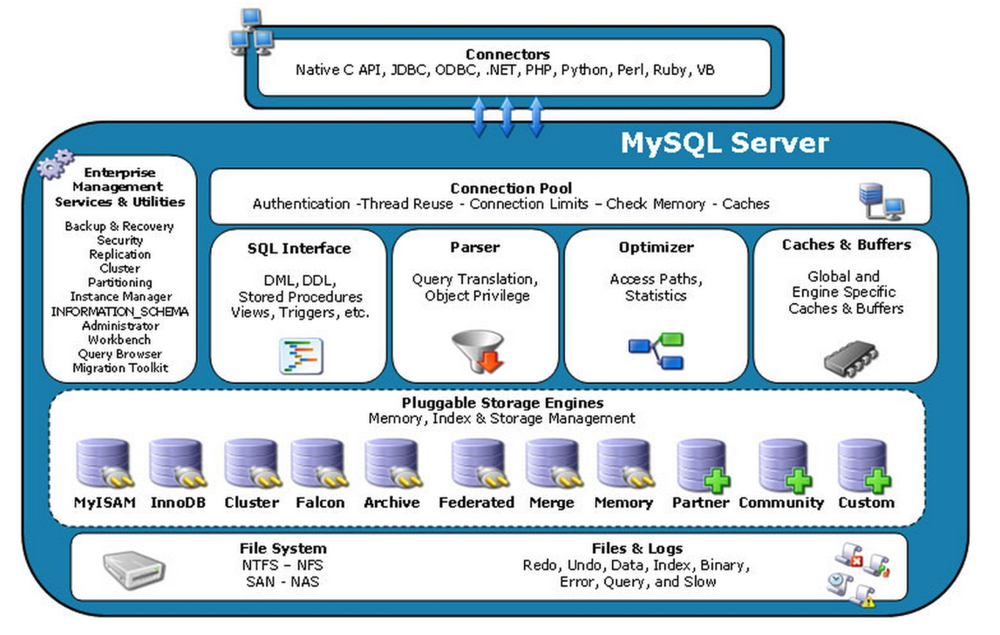
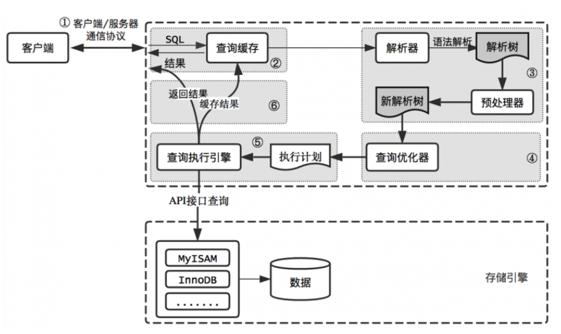

資料庫管理系統（DBMS）是一種用於建立、維護和管理資料庫的軟體工具。它允許使用者操作資料庫，因此在日常使用中，當我們談論資料庫時，通常指的就是 DBMS，例如 MySQL。
MySQL 基本架構
圖片來自：https://iter01.com/581014.html
外掛式的儲存引擎架構將查詢處理和其它的系統任務以及資料的儲存提取相分離。這種架構允許根據業務需求和實際情況選擇合適的存儲引擎。
1. 連線層 Connection Layer
- 通訊機制：
- 包括本地 socket 通訊 和 基於 client & server 端架構實現的 TCP/IP 的通訊方式。
- 本地 socket 通訊：可能同一台電腦或同一個 domain 的兩個應用程式之間的數據交換。
- 主要是想
確保數據能夠在不同的系統之間有效地傳輸。
- 連線管理：
- 主要負責
處理連線的建立、維護和斷開。 - 也包括授權認證和相關的安全機制，確保只有經過授權的用戶才能夠訪問系統
- 主要負責
- Thread Pool：
- 引入 thread pool 的概念，為通過認證且安全接入的客戶端分配 thread，來提高處理請求的速度。
- 安全連接：
- 該層可以實現基於 SSL 的安全連接，確保數據在傳輸過程中的加密和完整性。
- 權限驗證：
- 伺服器會
為每個安全接入的客戶端驗證其操作權限。 - 「連線管理」的「授權」：確定只有經過授權的用戶才能夠訪問系統。
- 「權限驗證」：則是 server 會為每個安全接入的客戶端驗證他的操作權限。
- 伺服器會
2. 服務層 Service Layer
- 主要負責執行大多數核心服務功能。
- 伺服器會
解析 SQL 查詢語句，建立內部的解析樹，並對其進行優化，例如決定查詢表的順序，判斷是否使用索引等，最終生成相應的執行計劃。- 解析樹可以想像成它會將語句分解成不同的元件，如 SELECT、FROM、WHERE 等，並將它們組織成一個樹狀結構
- SQL 接口(SQL interface)：
- 像是 MySQL 的大門，負責接收使用者的 SQL 指令並返回所需的查詢結果。
- 解析器(Parser)：
- 負責驗證和解析傳遞到解析器的 SQL 指令。
- 確保 SQL 語句的語法正確，並將其轉換成為 MySQL 可以理解的內部格式。
- 優化器(Optimizer)：
- 在查詢執行前，使用查詢優化器對 SQL 語句進行優化，如根據 where 條件決定執行順序，例如先進行過濾還是先進行投影。
- 快取與緩衝區(Caches & Buffers)：
- 如果查詢快取中有匹配的結果，查詢語句可以直接從查詢快取中獲取數據。
- 這種快取機制由多個小型快取組成，例如表快取、記錄快取、鍵快取、權限快取等。
- 表快取：快取表的結構信息
- 紀錄快取：快取表中的 row
- 鍵快取：快取 index
- 權限快取：快取用戶權限信息
3. 儲存引擎層 Storage Engine Layer
負責資料的邏輯儲存和提取- MySQL 是採用外掛式可替換的儲存引擎架構，將前面兩層所說的查詢處理 和 資料的儲存提取相分離，不同的儲存引擎支援不同的功能，可以根據業務需求和實際需要來選擇合適的儲存引擎。
- MySQL server 是透過一套統一的 API 與不同的儲存引擎進行溝通，讓上層的應用不需要關心底層資料是如何儲存和管理的。
4. 資料儲存層 Data Storage Layer
負責將資料實際存儲到磁碟上- 主要將數據存儲在裸設備上運行的文件系統中，並實現與存儲引擎的互動。
- 依賴於底層的檔案系統來管理磁碟上的資料塊，並提供給上層的儲存引擎所需的讀寫操作。
MySQL 查詢流程
圖片來自：https://iter01.com/581014.html
- 客戶端向 MySQL 伺服器發送查詢請求（這其中包括 請求進入 thread pool → 授權檢查 → 分配 thread）。
- 伺服器首先檢查查詢快取，如果命中快取，則直接返回快取中的結果（同時進行權限檢查）。如果沒有命中快取，則進入下一階段。
- 伺服器對 SQL 進行解析和預處理（包括處理解析器無法解決的語義問題和權限檢查），然後由優化器生成相應的執行計劃。
- MySQL 根據執行計劃，調用存儲引擎的 API 來執行查詢。
- 將查詢結果返回給客戶端，並將查詢結果存入快取。